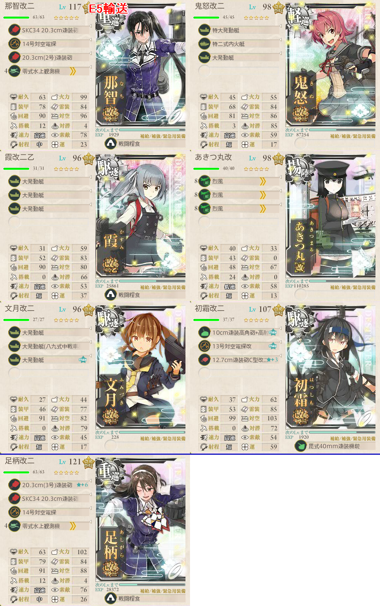
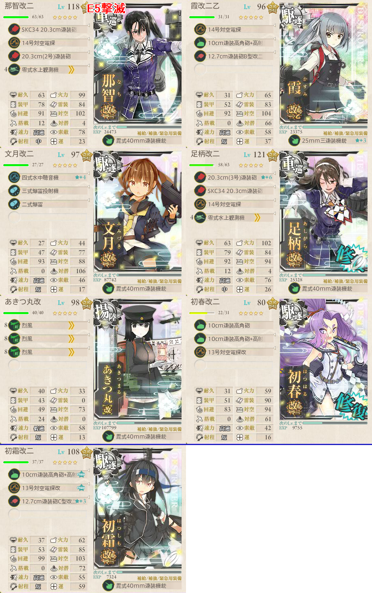

【艦これ】捷号決戦！邀撃、レイテ沖海戦(後篇) E5 オルモック沖
2018年冬イベント E5（丙作戦）
志摩艦隊札が付与され、E1～E4の乙以上には出撃できなくなる
志摩艦隊扱いされる艦
- 那智 足柄
- 鬼怒
- 曙 潮 霞 初春 若葉 初霜 浦波 卯月 沖波 朝霜 清霜（島風 長波）
- ただし、多号作戦に参加した鬼怒 卯月 潮 霞 島風 初春 長波 沖波 初霜はE6第二ゲージ特攻あり？
- 輸送能力に秀でた鬼怒 霞はここで使うとして、火力の出しやすい潮 島風 長波 初霜辺りは温存するべきか
- 丙なので、最悪栗田艦隊札をつけてから強引に使ってしまう手もある？
- 占守
輸送作戦
- TP500
- CDEGFHIJL
構成
駆逐2以上かつ史実志摩艦隊2以上
戦艦/空母出撃不可
索敵一定値以上
最短を通る際に高速統一しなければならないというのは嘘（少なくとも丙においては）
- あきつ丸でしっかり制空優勢を取っていける
TPゲージに対して特二式内火艇特攻あり
- 輸送能力をXとすると、ボスS勝利時にX、A勝利時に0.7XだけTPゲージを削れる
- A勝利で1回に100削るためには輸送能力143必要
- 特二式内火艇を複数所持していない限り現実的ではない
- ボス戦で航空優勢を取るためには制空が104+α必要
第三艦隊の7隻編成が利用可能
史実艦は輸送能力が優秀な鬼怒 霞を最低限起用する
道中に空襲が多いため対空カットインも採用したい

- TPは以下の通り
- 特二式内火艇x1（22）
- 大発系x8（8x8 = 64）
- 鬼怒ボーナス（8）
- 軽巡x1（2）
- 駆逐x3（5x3 = 15）
- 揚陸艦x1（12）
- 22 + 64 + 8 + 2 + 15 + 12 = 123
- これに戦闘糧食で+0～6されるため、125x4で最短4回のS勝利で終わる
- 輸送系の装備で連合艦隊を相手にすることになるため、決戦支援推奨
- 道中支援は警戒陣に頼るのでなくても構わない
基地航空隊
- 陸戦1陸攻3をボスとFマスに振り分ける
- 基地空襲があるため、第二航空隊は防空
出撃ログ（丙）
| 回数 | 編成 | 33式 | ルート | 戦果 |
|---|---|---|---|---|
| 1 | 那智 鬼怒 霞 あきつ丸 文月 初霜 足柄 | 27.77 | CDEGFHIJL | S勝利（阿武隈） TP123 |
| 2 | 那智 鬼怒 霞 あきつ丸 文月 初霜 足柄 | 27.77 | CDEGFHIJL | S勝利（朧） TP128 |
| 3 | 那智 鬼怒 霞 あきつ丸 文月 初霜 足柄 | 27.77 | CDEGFHIJL | A勝利 TP88 |
| 4 | 那智 鬼怒 霞 あきつ丸 文月 初霜 足柄 | 27.77 | CDEGFHIJL | S勝利 TP127 |
| 5 | 那智 鬼怒 霞 あきつ丸 文月 初霜 足柄 | 37.37 | CDEGFHIJL | S勝利（潮） TP34 ゲージ破壊 |
敵編成
| マス | 敵航空戦力 | 敵潜水艦 | 備考 |
|---|---|---|---|
| D | あり | なし | 空襲戦 |
| F | あり | なし | 空襲戦 |
| H | なし | なし | 駆逐4 PT小鬼2 |
| J | なし | なし | ツ級1 駆逐5 |
| L | あり | なし | ボス 連合艦隊 軽巡棲姫 ヌ級1 駆逐2 PT小鬼2 + 駆逐6 |
| あり | なし | 最終形態 軽巡棲姫 ヌ級2 駆逐3 + 駆逐6 | |
撃滅作戦
- ONPT
- ボスは「ヴェアアアアア」さん
- うるさいのでボイス音量に注意
構成
史実志摩艦隊4以上
駆逐4以上
索敵一定以上
道中支援は不要
決戦支援は必須ではないが、あると安定する

- ボス前の編成は2通りのうちどちらかで潜水艦を含む
- そのため、文月に先制対潜攻撃させている
基地航空隊
- 陸戦1陸攻3をボスに集中
出撃ログ（丙）
| 回数 | 編成 | 33式 | ルート | 戦果 |
|---|---|---|---|---|
| 1 | 那智 霞 文月 足柄 あきつ丸 鬼怒 初霜 | 38.04 | ORNPT | S勝利（阿賀野） |
| 2 | 那智 霞 文月 足柄 あきつ丸 初春 初霜 | 31.73 | ONPT | S勝利（沖波） |
| 3 | 那智 霞 文月 足柄 あきつ丸 初春 初霜 | 31.8 | ONPT | S勝利（野分） |
| 4 | 那智 霞 文月 足柄 あきつ丸 初春 初霜 | 31.8 | ONPT | S勝利（高雄） ゲージ破壊 |
敵編成
| マス | 敵航空戦力 | 敵潜水艦 | 備考 |
|---|---|---|---|
| O | あり | なし | 空襲戦 |
| R | あり | なし | ヌ級2 ツ級1 駆逐3 |
| N | あり | なし | ヌ級2 ツ級0～1 駆逐3～4 |
| P | 50％ | 50％ | 軽空母か潜水艦のどちらかを含む ヌ級0～1 ツ級0～1 戦艦0～1 軽巡1 駆逐3 潜水0～1 |
| T | あり | なし | ボス 連合艦隊 重巡棲姫 ヌ級1 ネ級1 ツ級1 駆逐2 + 駆逐6 |
| あり | なし | 最終形態 重巡棲姫 ヌ級2 ネ級1 ツ級1 駆逐1 + 駆逐6 | |